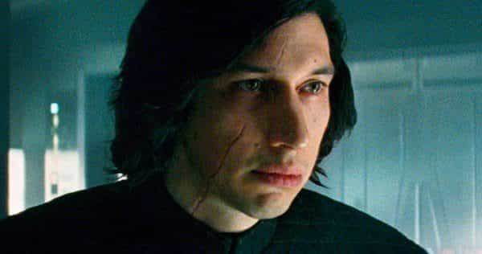

No one will ever go broke underestimating the masochism of Star Wars fans. With the exception of last year’s Rogue One, every Star Wars film for the past twenty years has been pure, unadulterated garbage, yet the franchise continues to make enough money to outstrip the GDPs of half the third world. Star Wars: The Last Jedi is the latest outing in a galaxy far, far away, breaking box office records with yet another sugary mix of generic CGI action and social justice mumbo-jumbo.
The Last Jedi has also revealed mainstream movie critics to be bought-and-paid-for hacks, because their universal acclaim for the movie belies the fans utter revulsion for it. And the fans are right: The Last Jedi isn’t just the worst Star Wars film ever, it’s easily one of the worst films in years. Every time I think Star Wars can’t get any worse, the creators somehow dig themselves a little deeper into the hole.
The Last Jedi isn’t bad just because of anti-white, anti-male propaganda. It’s not bad just because it pisses all over Star Wars canon, including the canon of the previous film, The Force Awakens. The Last Jedi is bad because it fundamentally fails at storytelling and because it doesn’t understand what Star Wars actually is.
The Force Awakens was bad, but it was a bland, inoffensive kind of bad, whereas The Last Jedi actually made me angry. I would have walked out of the theater if Roosh hadn’t asked me to review the movie for ROK. Here’s why the movie is so horrible. And yes, this review is full of spoilers, but who cares?
No White Men Allowed
To be fair, director Rian Johnson had a tall order in cleaning up the mess that J.J. Abrams dumped in his lap. The Force Awakens was full of Death Star-sized plot holes that even a competent director or writer would have struggled to tie up. For example, in the previous film, it’s established that the Empire is defeated and the Republic rules the galaxy, yet there’s still a “Resistance” a la the Rebels in the original movies. What are they supposed to be resisting?
The Last Jedi picks up where The Force Awakens left off. Despite having destroyed the Death Star Starkiller Base, the Rebels Resistance have been cornered by the Empire First Order on Hoth an unnamed planet, where they’re forced to evacuate. But don’t worry: this movie isn’t just a frame-for-frame ripoff of The Empire Strikes Back. Because Rian Johnson had to prove his dick was bigger than J.J. Abrams’, he decided to rip off Return of the Jedi too!
Pretty much everything about The Last Jedi is a conscious slap in the face to Star Wars’ white male fans. For example, all of the leading generals in the Resistance are women, including Princess General Leia (Carrie Fisher), which explains why they went from running the galaxy in the previous movie to being reduced to a handful of ships in this one. All of the First Order’s soldiers and generals save one are white men, while the Resistance is staffed entirely by non-whites and women, with the exception of Poe Dameron (Oscar Isaac).
Poe is by far the most interesting character in the movie, even considering how the script goes out of its way to shit on him. You can practically hear the writers muttering, “Fuck you, toxic masculinity!” every time he’s on screen. Despite being forward-thinking and courageous, Poe is constantly slapped down by his female superiors for being too “hot-headed.” For example, despite his bravery in taking out one of the First Order’s cruisers at the beginning of the movie, Leia demotes him for being “reckless.”
Later on in the movie, after Leia falls into a coma after miraculously surviving being blasted into open space (don’t ask), Poe discovers that her replacement, the purple-haired (yes, I’m serious) HR lady Holdo (Laura Dern) is planning to evacuate the Resistance’s last cruiser into unarmed transports, a suicidal and cowardly move. He intelligently proclaims a mutiny, only for Leia to side with Holdo, whose plan ends up getting all but two dozen members of the Resistance killed. Heckuva job, Holdy!
The film’s C-plot, starring Finn (John Boyega), is equally insipid. Frustrated with HR lady Holdo’s complete inability to lead, Finn teams up with Rose Tico (Kelly Marie Tran), a communist Montagnard with Down syndrome, to find a codebreaker who can keep the First Order from tracking the Resistance through hyperspace. They go to the resort planet of Canto Bight and literally start murdering people for the crime of being rich. This is Ghostbusters–tier dumb.
But none of this compares to how The Last Jedi rapes the character of Luke Skywalker (Mark Hamill). The main plot follows Rey (Daisy Ridley), the Mary Sue feminist street urchin, as she tries to convince Luke to help the Resistance and train her to use the Force. Luke initially refuses, whining about how the Jedi “deserve” to end, before reluctantly agreeing to Rey’s demands. Hamill’s performance is embarrassingly bad and Luke’s character arc is a sick joke, rivaling how The Force Awakens depicted Han Solo as a deadbeat Peter Pan.
One good thing about The Last Jedi is that Rey is given far less screen time then in The Force Awakens. She’s just as smarmy, unlikable, and unrealistic—her bizarre telepathic dialogues with antagonist Kylo Ren (Adam Driver) are a case in point—but this is still an improvement. Unfortunately, the addition of SJW masturbation fantasies like Rose and Holdo—who I’m pretty sure was given purple hair as a deliberate middle finger to the fans—drowns out this positive move.
Propaganda Over Plot

The Last Jedi’s insistence on shoving social justice down the audience’s throats is only one reason why it’s so bad. Rian Johnson was clearly out of his depth in directing a Star Wars movie: his sole good film to date is 2005’s Brick, a quirky blend of teen drama and film noir. The Last Jedi’s plot development, tone, character arcs, and everything else are muddled and nonsensical.
For example, the second part of a three-act drama is supposed to be dark and brooding, as the heroes go through struggles that test their ability to survive and triumph. But far from dark, The Last Jedi is full of tonally-inappropriate slapstick. The first part of the film is a dumb comedy routine between Poe Dameron and a First Order general that is not funny and doesn’t fit the story at all. Similarly, during one of their telepathic phone sex sessions, Rey whines about the fact that Darth Bugman has his shirt off, making the scene uncomfortably resemble the episode of Girls where Lena Dunham’s character catches Adam jacking off.
These constant tone shifts aren’t just jarring, they undermine the solemnity the movie desperately needs. The original Star Wars films were rooted in traditional myths and adventure stories of the mid-20th century, and while lighthearted at times, they were fundamentally serious movies. The Last Jedi is fundamentally un-serious, replacing the epic feel of the original movies with hipster nihilism about “let[ting] the past die.” This is illustrated when Luke and Yoda decide to destroy the Jedi library, with the reasoning that Rey, a snot-nosed 14-year old girl, is wiser than the collected works of all Jedi throughout history.
Rian Johnson’s cargo cult thinking infects the movie in other ways. For example, in the beginning of the movie, I had to stifle a laugh when the Resistance unveils deep space bombers that drop their payload out of bomb bays in the same way that airplanes do. Wing Commander got mocked relentlessly for doing this back in 1999, but the average movie critic’s IQ has dropped about five points since then, so nobody noticed how retarded this scene looked. Sure, the X-wing/TIE fighter dogfights in the original movies were based off of World War II airplane combat, but George Lucas wasn’t so stupid as to do something like this.
Not only that, The Last Jedi’s insistence on lecturing the audience about cultural Marxism actively impedes the plot in several ways. For example, near the end of the film, Finn leads a suicidal attack on the First Order that would save the Resistance. His sacrifice would have been a great moment in the film, showing how his character has grown since The Force Awakens, where he was depicted as a total coward.
But just as Finn is about to die a hero, Rose stops him, justifying it by saying that they need to win by “saving what we love” instead of “killing what we hate” (or some bullshit like that), dooming the Resistance in the process. Good job, moron. At least she dies afterwards, sparing us from having to listen to her nasally voice or look at her ugly face.
Finally, General Leia somehow manages to completely evade responsibility for Kylo Ren falling to the dark side of the Force, even though she’s his mother. The plots of both The Last Jedi and The Force Awakens have Darth Bugman focusing all his rage on Han Solo (his father) and Luke Skywalker, with Leia somehow skating off. And despite the fact that Leia’s son is the second-in-command of the First Order—meaning she is directly responsible for the galaxy being plunged into war—nobody has a problem with her serving as one of the Resistance’s senior leaders.
Putting Star Wars Out To Pasture
The central problem with the new Star Wars movies—or revivals of any classic franchise, for that matter—is that contemporary filmmakers don’t understand what made the originals good. Star Wars was a product of the 1970’s: an epic tale of good vs. evil, drawing on cultural motifs familiar to Americans of the time. Bugmen like Rian Johnson or J.J. Abrams can see the surface elements of Star Wars, but without being immersed in the cultural milieu that birthed it, the best they can do is high-budget fan fiction with SJW nonsense drizzled on top.
That’s all The Force Awakens or The Last Jedi are: cosplay with CGI. The X-wings and lightsabers and aliens may look like the ones in the original trilogy, but the heart and soul aren’t there. In their place is poor writing, left-wing agitprop, and dumb jokes. The Force Awakens was dull and boring, but The Last Jedi will leave you longing for the earnestness of Jar Jar Binks. Yes, it’s that bad.
The irony is that Kylo Ren’s nihilistic mantra of “let[ting] the past die,” while completely inappropriate for a Star Wars movie, is precisely how modern moviegoers should treat the franchise itself. Star Wars is dead, nerds. It’s not coming back. It’s time to take it behind the woodshed and put a bullet in its brain. The original movies were great and some of the video games were pretty good, but the monkey’s dead and the show is over.
Read More: Did The New Star Wars Casting Have A Racial Agenda?